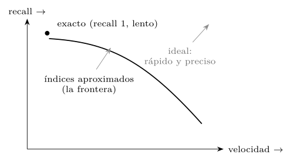
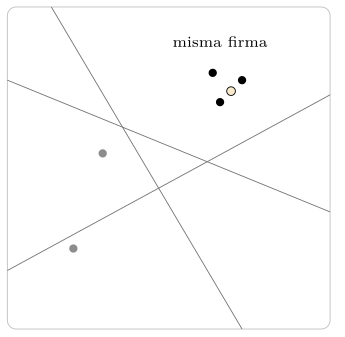
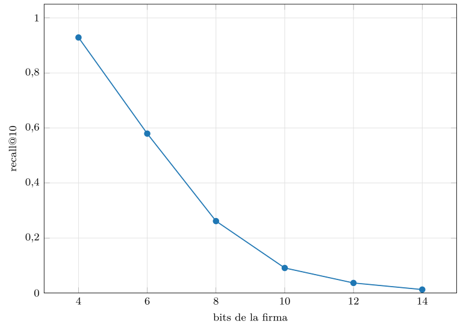
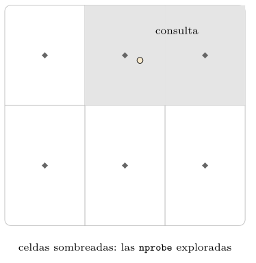
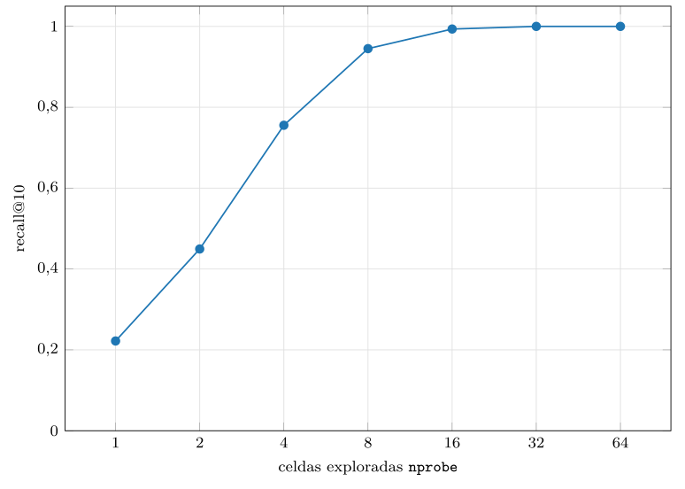
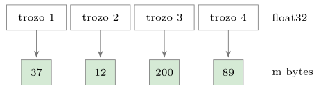
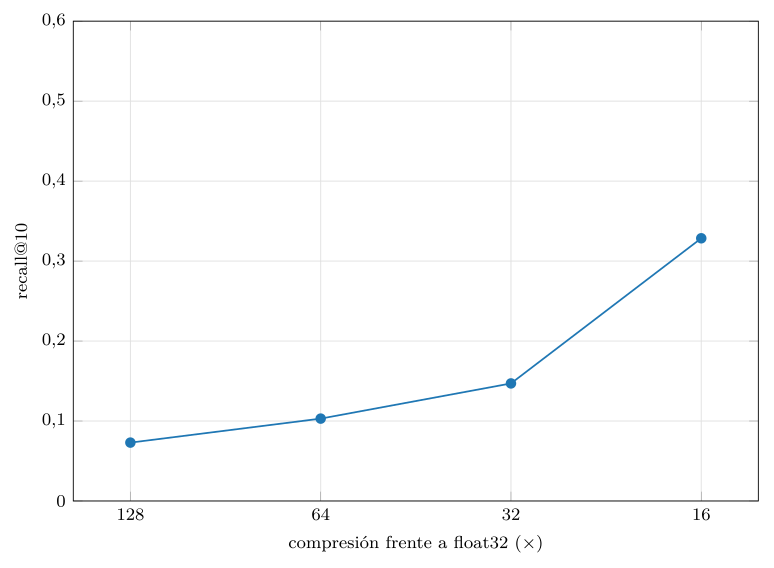
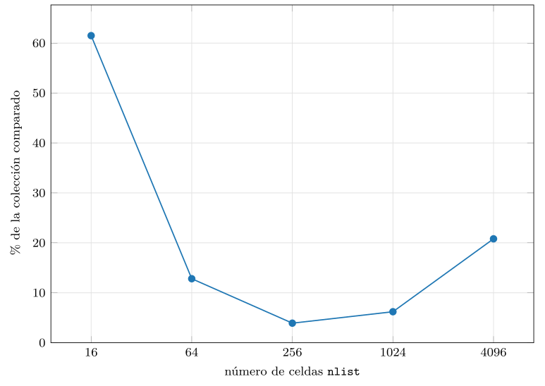
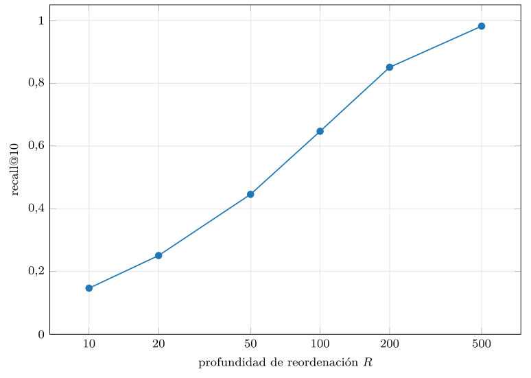

Capítulo 15. Índices de vecino aproximado
El capítulo anterior terminó con un diagnóstico y una promesa. El diagnóstico: la búsqueda exacta por fuerza bruta no escala —su latencia crece linealmente con la colección— y los árboles exactos clásicos no sobreviven a la alta dimensión, por la concentración de distancias del capítulo 13. La promesa: existe una salida, los índices de vecino aproximado (ANN, por approximate nearest neighbor), que encuentran casi siempre los verdaderos vecinos sin recorrer toda la colección. Este capítulo cumple esa promesa. Es el corazón técnico de la cuarta parte y, en buena medida, de toda la base de datos vectorial: el índice es lo que convierte una matriz de millones de vectores en un sistema que responde en milisegundos.
La idea que lo hace posible es un trato. Se renuncia a la garantía de encontrar siempre el vecino más próximo y se acepta encontrarlo casi siempre, a cambio de una aceleración de uno o dos órdenes de magnitud. Ese trato —recall por velocidad— es la columna vertebral del capítulo, y conviene tomárselo en serio: en la búsqueda semántica, que el resultado número ocho sea el verdadero número nueve no se nota, pero que la respuesta llegue en cinco milisegundos en vez de en quinientos lo cambia todo. La pregunta de ingeniería no es «¿es exacto?» sino «¿cuánto recall, a cambio de cuánta velocidad?», y cada familia de índices responde de un modo distinto.
Conviene situar este capítulo en el arco del libro. La primera parte construyó índices exactos —el B-tree, el hash— que encuentran siempre lo que se busca porque se apoyan en un orden total: se puede decir sin ambigüedad si una clave es menor que otra. El espacio vectorial no tiene ese orden —no hay un «antes» y un «después» entre dos puntos de una esfera de 768 dimensiones— y, peor, la concentración de distancias del capítulo 13 borra la diferencia entre cerca y lejos que un índice exacto necesitaría para podar. Por eso los índices clásicos no sirven aquí, y por eso hace falta una familia nueva que renuncie a la exactitud para ganar la escala. Este capítulo es, en cierto modo, el reencuentro con el problema de la primera parte —indexar para no recorrerlo todo— bajo una geometría que lo vuelve mucho más difícil.
Cuatro familias se reparten el terreno, y este capítulo las construye una a una, desde cero, en numpy: el hashing sensible a la localidad (LSH), que manda los vectores parecidos al mismo cubo; las listas invertidas (IVF), que parten el espacio en celdas y exploran solo unas pocas; la cuantización de producto (PQ), que comprime los vectores para que quepan en memoria y se comparen rápido; y los grafos navegables (HNSW), que tejen una red de vecindad y la recorren saltando hacia el más próximo. Al final se miden todas en el mismo plano —recall frente a coste— y emerge un veredicto matizado. Como siempre, todo medido: el módulo de la práctica implementa los cinco índices —los cuatro aproximados más la fuerza bruta de referencia— y traza sus compromisos con datos reales, en una CPU normal.
La frontera exacto/aproximado
Antes de construir nada hay que fijar cómo se mide la calidad de un índice aproximado, porque sin esa vara no hay forma de comparar. La medida central es el recall@k: de los \(k\) verdaderos vecinos más próximos —los que daría la fuerza bruta—, qué fracción devuelve el índice. Un recall@10 de \(0{,}95\) significa que, de media, el índice recupera nueve y medio de los diez verdaderos vecinos. Es una medida de exhaustividad, no de orden: no penaliza que los devuelva en otro orden, solo que se deje alguno fuera (listado 15.1). La fuerza bruta tiene, por definición, recall \(1\); todo índice aproximado vive por debajo, y su gracia está en acercarse a \(1\) pagando poco.
def recall(aprox, exacto):
tot = 0.0
for ap, ver in zip(aprox, exacto):
tot += len(set(ver) & set(ap)) / len(ver)
return tot / len(aprox) # 1.0 = recupera todos los verdaderosListado 15.1. recall@k: fraccion de los k verdaderos vecinos que el indice recupera. La fuerza bruta da la verdad de referencia; el indice se mide contra ella.
Lo que un índice aproximado ofrece no es un punto, sino una curva: girando sus parámetros se cambia recall por velocidad a lo largo de toda una frontera (figura 15.1). En un extremo, máximo recall a costa de explorar mucho —acercándose a la fuerza bruta—; en el otro, máxima velocidad a costa de dejar vecinos fuera. El diseñador no elige «el mejor índice» en abstracto, sino el punto de operación que su caso tolera: un buscador interactivo prioriza la velocidad y acepta recall \(0{,}9\); un sistema de recuperación legal exige recall \(0{,}99\) y paga la latencia. La frontera, no un número único, es lo que caracteriza a un índice.

¿Cómo se mide la «velocidad»? La latencia en milisegundos es lo que el usuario siente, pero es traicionera como medida de un algoritmo: depende de la máquina, del lenguaje, de la caché y de mil detalles de implementación, y una implementación en Python puro —como la de este libro— puede ser más lenta que una fuerza bruta vectorizada aun haciendo menos trabajo real. Por eso el coste que este capítulo mide, y el que hace justas las comparaciones, es el número de comparaciones de distancia que el índice realiza por consulta, casi siempre expresado como porcentaje de la colección. Es determinista, reproducible y refleja el trabajo algorítmico, no el reloj de una máquina concreta. Un índice que alcanza recall \(0{,}95\) comparando con el 4 % de la colección hace, en esencia, veinticinco veces menos trabajo que la fuerza bruta; que eso se traduzca en veinticinco veces menos tiempo depende de la implementación, pero la ventaja algorítmica es esa, y es la que las gráficas de este capítulo reflejan. La latencia se reporta también, como referencia, pero la historia la cuenta el coste de comparaciones.
Hashing sensible a la localidad (LSH)
La primera familia, y la más antigua, nace de una idea elegante del capítulo 13: en alta dimensión, una proyección aleatoria casi nunca confunde dos puntos distintos, así que se puede usar el azar para agrupar lo parecido (Indyk y Motwani 1998). El hashing sensible a la localidad (LSH) construye funciones de hash con una propiedad especial —al revés que un hash criptográfico—: que los vectores parecidos caigan, con alta probabilidad, en el mismo cubo. Buscar se reduce entonces a mirar el cubo de la consulta.
La realización más simple para el coseno es la del hiperplano aleatorio. Se toma un vector aleatorio —un hiperplano que parte el espacio en dos— y se anota de qué lado cae cada vector: un bit. Con varios hiperplanos se obtiene una firma de varios bits, y los vectores que apuntan en direcciones parecidas caen del mismo lado de casi todos los hiperplanos, compartiendo firma (figura 15.2). La firma es la clave del cubo; buscar es hashear la consulta y recuperar los vectores de su cubo, reordenándolos luego de forma exacta (listado 15.2).

class IndiceLSH:
def __init__(self, base, bits=12, tablas=8):
d = base.shape[1]
self.planos = [rng.standard_normal((bits, d))
for _ in range(tablas)]
self.cubos = []
for p in self.planos: # una tabla por proyeccion
firma = (base @ p.T > 0) # un bit por hiperplano
cubo = {}
for i, c in enumerate(self._clave(firma)):
cubo.setdefault(int(c), []).append(i)
self.cubos.append(cubo)Listado 15.2. LSH por hiperplanos: la firma es el signo del producto con b vectores aleatorios; los vectores con la misma firma comparten cubo.
Amplificar con varias tablas y medir el compromiso
Una sola firma es frágil: dos vectores muy parecidos pueden caer en lados distintos de un hiperplano desafortunado y separarse. La solución es amplificar con varias tablas, cada una con sus propios hiperplanos: un vector es candidato si comparte firma con la consulta en alguna tabla. Más tablas recuperan más vecinos verdaderos —más recall— a costa de más candidatos que reordenar —más coste—. El número de bits regula el tamaño de los cubos: más bits hacen cubos más pequeños y selectivos (menos candidatos, menos recall); menos bits, cubos grandes (más candidatos, más recall). Los números lo aclaran: con una firma de 12 bits hay \(2^{12}=4\,096\) cubos posibles, así que veinte mil vectores se reparten en unos cinco por cubo; con 16 tablas, una consulta reúne del orden de ochenta candidatos —muy pocos, de ahí el recall bajo—. Para subir el recall hay que bajar los bits (cubos más grandes) o subir las tablas (más cubos consultados), y en ambos casos se paga comparando con más vectores: el compromiso pobre que la medida confirma.
La práctica mide LSH con 16 tablas, barriendo los bits de la firma (figura 15.3), y el resultado es revelador: para alcanzar un recall alto, LSH tiene que mirar una fracción enorme de la colección. Con cuatro bits llega a recall \(0{,}93\), pero comparando con el 63 % de los vectores —apenas mejor que la fuerza bruta—; al subir los bits para recortar candidatos, el recall se desploma. LSH funciona, pero su frontera recall-coste es pobre comparada con las familias que vienen: en la práctica moderna ha quedado desplazado, salvo en variantes especializadas, por IVF y los grafos. Su valor aquí es pedagógico e histórico: fue el primero en domar formalmente la maldición de la dimensión (Andoni y Indyk 2008), y su idea —el azar que agrupa lo parecido— reaparece, afinada, en todo lo demás.
Conviene además recordar que LSH es una familia, no una sola técnica: hay una función de hash sensible a la localidad para cada métrica. Los hiperplanos aleatorios sirven para el coseno; para la distancia euclídea hay variantes basadas en proyecciones con rejilla; y para la similitud de Jaccard sobre conjuntos está el MinHash, que ya apareció en el capítulo 14 como la forma de detectar duplicados a escala. Todas comparten el esquema —firmar con funciones aleatorias, agrupar por firma, amplificar con varias tablas— y todas heredan su compromiso. El MinHash, en particular, sigue siendo la herramienta de referencia para la deduplicación de grandes corpus, un nicho donde la representación es dispersa (conjuntos de términos) y LSH no tiene rival entre las familias de este capítulo, pensadas para vectores densos. La lección es que LSH no está «muerto»: está especializado.

src/cap15_ann.py.Cuantización: IVF y Product Quantization
La segunda familia ataca el problema partiendo el espacio en regiones y, además, comprimiendo los vectores. Reúne dos técnicas que a menudo se combinan: las listas invertidas (IVF), que deciden dónde buscar, y la cuantización de producto (PQ), que abarata cómo se compara. Son las dos palancas que el capítulo 14 anticipó, ahora desarrolladas.
IVF: partir el espacio en celdas
La idea de las listas invertidas (IVF, por inverted file) es directa: agrupar los vectores en celdas y, en cada consulta, mirar solo las celdas prometedoras. Las celdas se obtienen con \(k\)-means —el mismo del capítulo 11—, que coloca un puñado de centroides y asigna cada vector a su centroide más cercano; cada centroide encabeza una lista de los vectores de su celda. Buscar consiste en hallar los nprobe centroides más próximos a la consulta y escanear solo esas listas (figura 15.4 y listado 15.3). Con nprobe pequeño se mira poco y rápido; subiéndolo se gana recall.

nprobe celdas cuyos centroides están más cerca (sombreadas); el resto de la colección ni se mira.class IndiceIVF:
def __init__(self, base, nlist=256):
self.centroides, asign = kmeans(base, nlist)
self.listas = [np.where(asign == j)[0]
for j in range(nlist)] # una lista por celda
def buscar(self, q, k, nprobe=8):
celdas = np.argsort(((self.centroides - q) ** 2).sum(1))[:nprobe]
cand = np.concatenate([self.listas[c] for c in celdas])
sims = self.base[cand] @ q # reordena exacto
return cand[np.argsort(-sims)[:k]]Listado 15.3. IVF: k-means crea las celdas; la busqueda explora solo las nprobe celdas cuyos centroides estan mas cerca de la consulta.
La práctica mide IVF con 256 celdas, barriendo nprobe (figura 15.5), y la curva es excelente: con solo 8 celdas de 256, el recall llega a \(0{,}945\) comparando con menos del 4 % de la colección —unas veinticinco veces menos trabajo que la fuerza bruta—; con 16 celdas, recall \(0{,}99\) al 6,7 %. La razón de que funcione tan bien es la estructura de los datos del capítulo 13: como los embeddings reales se agrupan en cúmulos, las celdas de \(k\)-means capturan esos cúmulos y los vecinos de una consulta caen casi todos en unas pocas celdas. IVF brilla, precisamente, cuando los datos tienen estructura —que es casi siempre—, y flaquea cuando no la tienen o cuando los cúmulos no coinciden con las celdas que el \(k\)-means halló. De ahí varias mejoras habituales: reentrenar el \(k\)-means cuando los datos derivan, solapar las celdas para que un vector frontera caiga en varias, o usar un índice más fino para el cuantizador grueso —un índice invertido multinivel— cuando nlist crece tanto que escanear los centroides se vuelve caro, como midió la figura 15.11. Pero la idea central no cambia. Las cifras lo ilustran: con 256 celdas, veinte mil vectores dan unos setenta y ocho por celda; explorar ocho celdas compara con unos seiscientos candidatos más los doscientos cincuenta y seis centroides, en total un 4 % de la colección, y con eso basta para un recall del 94 %. Veinticinco veces menos trabajo que la fuerza bruta, por mirar solo donde es probable que estén los vecinos.

nprobe. Con muy pocas celdas exploradas se alcanza un recall altísimo, porque los vecinos se concentran en las celdas cercanas a la consulta. Datos de src/cap15_ann.py.PQ: comprimir el vector
La cuantización de producto (PQ, por product quantization) resuelve un problema distinto: la memoria y el coste de cada comparación (Jégou et al. 2011). Parte cada vector en \(m\) trozos y codifica cada trozo con uno de 256 centroides —aprendidos, de nuevo, con \(k\)-means sobre ese subespacio—, de modo que cada trozo se reduce a un byte (el índice del centroide) y el vector entero, a \(m\) bytes (figura 15.6). Un vector de 128 dimensiones en float32 —512 bytes— cabe así en 8 o 16 bytes: una compresión de treinta a sesenta veces. A escala, la diferencia es abismal: cien millones de esos vectores ocupan unos 51 gigabytes sin comprimir y apenas 800 megabytes con PQ a 8 bytes —de no caber en una máquina a caber con holgura—. Esa es la verdadera aportación de PQ, y la razón de que su recall modesto en solitario no lo descalifique: cambia el orden de magnitud de lo que cabe en memoria.

Lo ingenioso de PQ no es solo comprimir, sino comparar sin descomprimir. Para una consulta, se precalcula una pequeña tabla con la distancia de cada trozo de la consulta a los 256 centroides de su subespacio; la distancia aproximada a cualquier vector es entonces una suma de búsquedas en esa tabla, una por trozo —la distancia asimétrica, o ADC— (listado 15.4). Sumar bytes a través de una tabla es muchísimo más rápido que multiplicar vectores en coma flotante.
def buscar(self, q, k):
tabla = np.empty((self.m, 256)) # distancias por trozo
for j in range(self.m):
qs = q[j * self.sub:(j + 1) * self.sub]
tabla[j] = ((self.codebooks[j] - qs) ** 2).sum(1)
# distancia aproximada = suma de las distancias de cada trozo
dist = tabla[np.arange(self.m), self.codigos].sum(1)
return np.argsort(dist)[:k]Listado 15.4. PQ: la distancia se estima sumando, por trozo, distancias precomputadas de la consulta a los 256 centroides del subespacio (ADC).
El precio de PQ es la fidelidad. La práctica lo mide (figura 15.7): con \(m=8\) —sesenta y cuatro veces menos memoria— el recall@10 sin reordenar es de apenas \(0{,}10\); subiendo a \(m=32\) —dieciséis veces menos memoria— sube a \(0{,}33\). Son cifras bajas, y por una buena razón: PQ no se usa solo. Es, ante todo, una palanca de memoria, y en la práctica se combina de dos maneras. Primero, se monta sobre IVF —el célebre IVFPQ—: IVF decide qué celdas mirar y PQ abarata las comparaciones dentro de ellas. Segundo, se reordena: PQ produce deprisa una lista amplia de candidatos y luego se reordena ese puñado con las distancias exactas, recuperando casi todo el recall perdido. PQ es la pieza que hace caber miles de millones de vectores en memoria; su recall modesto en solitario no es un defecto, sino la señal de que es un componente, no un índice completo.

src/cap15_ann.py.Comparativa de índices
Construidas las cuatro familias, toca enfrentarlas en el mismo plano, que es donde se ve la verdad. La figura 15.10 traza el recall frente al coste —el porcentaje de la colección comparado— de IVF, HNSW y LSH sobre los mismos datos y las mismas consultas. La lectura es nítida: arriba a la izquierda —mucho recall, poco coste— es lo ideal, y allí mandan IVF y HNSW, muy juntos, mientras LSH queda descolgado abajo a la derecha, necesitando comparar con la mayor parte de la colección para acercarse al recall de los otros. La tabla 15.1 resume el mejor punto de operación de cada familia frente a la fuerza bruta.

src/cap15_ann.py.| Índice | recall@10 | % de la colección comparado |
|---|---|---|
| Flat (fuerza bruta) | \(1{,}00\) | \(100{,}0\) |
| IVF | \(0{,}99\) | \(6{,}7\) |
| HNSW | \(0{,}94\) | \(4{,}5\) |
| LSH | \(0{,}58\) | \(23{,}3\) |
Sería un error leer la tabla como «IVF gana». El resultado depende de los datos, y aquí los datos están limpiamente agrupados en cúmulos, lo que favorece al \(k\)-means de IVF; sobre datos menos estructurados, HNSW suele tomar la delantera. Más aún, la elección real rara vez se decide solo por la frontera recall-coste, sino por un haz de factores que la tabla no captura (tabla 15.2). HNSW ofrece la mejor flexibilidad operativa —sin entrenamiento, con inserciones incrementales, un solo mando—, pero gasta mucha memoria. IVF entrena rápido y gasta poca memoria, pero su calidad depende de un \(k\)-means que hay que reentrenar si los datos derivan. PQ es la palanca de memoria que permite escalar a miles de millones, casi siempre combinada con IVF. Y LSH, pese a su frontera pobre, conserva nichos donde su simplicidad y sus garantías teóricas pesan. La pregunta correcta no es «cuál es el mejor», sino «cuál encaja con esta colección, esta carga y estas restricciones de memoria y actualización».
Un ejemplo de razonamiento ayuda a fijarlo. Supongamos diez millones de vectores que caben holgados en memoria y cambian poco: HNSW es la elección natural, por su frontera y su flexibilidad, y la memoria del grafo es asumible. Cambiemos un dato: ahora son quinientos millones y la memoria aprieta; HNSW sobre vectores sin comprimir ya no cabe, así que o se cuantiza (HNSW sobre vectores cuantizados, aceptando algo menos de recall) o se pasa a IVFPQ, que comprime más agresivamente. Cambiemos otro: los datos llegan en avalanchas y se borran en masa; la facilidad de actualización de HNSW pesa más, y se acepta su mayor memoria. Ningún cambio invalida a los demás índices, pero cada uno desplaza el equilibrio. Elegir bien es, sobre todo, saber qué pregunta domina —memoria, latencia, actualización, recall— en este caso.
| Familia | Perfil y cuándo encaja |
|---|---|
| Flat | Exacto, sin parámetros. Colecciones pequeñas o recall perfecto obligatorio. |
| IVF (+PQ) | Poca memoria, entrena rápido; reentrenar si los datos derivan. Escala enorme con PQ. |
| HNSW | Mejor flexibilidad (sin entrenar, incremental); mucha memoria. Por defecto en memoria. |
| LSH | Simple, con garantías teóricas; frontera pobre. Nichos especializados. |
Práctica: las cuatro familias, medidas
Todo lo anterior sale de src/cap15_ann.py —numpy, CPU, sin FAISS ni GPU—, que implementa las cinco clases de índice —IndiceFlat, IndiceLSH, IndiceIVF, IndicePQ e IndiceHNSW— sobre la misma colección sintética, estructurada en cúmulos para que la búsqueda tenga sentido. Cada índice expone el mismo método buscar, que devuelve los vecinos y el número de comparaciones realizadas, de modo que recall y coste se miden en la misma pasada (listado 15.6). El coste se reporta como porcentaje de la colección, que es reproducible; la latencia, también, como referencia.
class IndiceFlat: ... # fuerza bruta, recall 1 (la referencia)
class IndiceLSH: ... # hiperplanos aleatorios
class IndiceIVF: ... # listas invertidas (k-means)
class IndicePQ: ... # cuantizacion de producto
class IndiceHNSW: ... # grafo navegable jerarquico
def simular_ivf(): ... # recall y coste segun nprobe
def simular_lsh(): ... # recall y candidatos segun los bits
def simular_pq(): ... # recall y compresion segun m
def simular_hnsw(): ... # recall y coste segun ef
def simular_frontera(): ... # las tres familias en un planoListado 15.6. La organizacion del modulo: cinco indices con la misma interfaz —buscar devuelve vecinos y comparaciones— y una medida por familia.
Las implementaciones, completas
Vale la pena ver las piezas centrales completas, sin elipsis, porque caben en sorprendentemente poco código y porque verlas enteras disipa el aura de complejidad que rodea a estos índices. El IVF completo —construcción por \(k\)-means y búsqueda por nprobe celdas— es apenas una docena de líneas (listado 15.7): toda su potencia está en delegar el agrupamiento al \(k\)-means y en restringir la búsqueda a las celdas prometedoras.
class IndiceIVF:
def __init__(self, base, nlist=256):
self.base = base
self.centroides, asign = kmeans(base, nlist)
self.listas = [np.where(asign == j)[0] for j in range(nlist)]
def buscar(self, q, k, nprobe=8):
dc = ((self.centroides - q) ** 2).sum(1) # a cada centroide
celdas = np.argsort(dc)[:nprobe] # las nprobe mas cerca
cand = np.concatenate([self.listas[c] for c in celdas])
sims = self.base[cand] @ q # reordena exacto
orden = np.argsort(-sims)[:k]
return cand[orden].tolist(), len(self.centroides) + len(cand)Listado 15.7. IVF completo: construccion por k-means y busqueda restringida a las nprobe celdas mas cercanas, con reordenacion exacta dentro de ellas.
El PQ completo —aprender los \(m\) libros de códigos y estimar la distancia con la tabla precomputada (ADC)— tampoco es mucho más (listado 15.8). La construcción es \(m\) ejecuciones de \(k\)-means, una por subespacio; la búsqueda, una tabla de búsqueda y una suma.
class IndicePQ:
def __init__(self, base, m=8):
self.m, self.sub = m, base.shape[1] // m
self.codebooks, self.codigos = [], np.empty(
(len(base), m), dtype=np.uint8)
for j in range(m): # un k-means por trozo
trozo = base[:, j*self.sub:(j+1)*self.sub]
cent, asign = kmeans(trozo, 256)
self.codebooks.append(cent)
self.codigos[:, j] = asign.astype(np.uint8)
def buscar(self, q, k):
tabla = np.empty((self.m, 256))
for j in range(self.m): # tabla de distancias
qs = q[j*self.sub:(j+1)*self.sub]
tabla[j] = ((self.codebooks[j] - qs) ** 2).sum(1)
dist = tabla[np.arange(self.m), self.codigos].sum(1) # ADC
return np.argsort(dist)[:k].tolist(), len(self.codigos)Listado 15.8. PQ completo: m libros de codigos (uno por subespacio) y distancia asimetrica (ADC) por suma de tablas precomputadas.
El HNSW es el más extenso, por la jerarquía y la heurística de vecinos, pero su inserción —el corazón de la construcción— se lee con claridad (listado 15.9): se sortea el nivel del nodo, se desciende con búsqueda voraz por las capas altas y se conecta, en cada capa baja, a los vecinos que la heurística de diversidad selecciona, podando los que se exceden de grado.
def _insertar(self, i):
nivel = self._nivel_aleatorio()
self.grafo.append([set() for _ in range(nivel + 1)])
if i == 0:
self.entrada, self.maxnivel = 0, nivel
return
q, ep = self.base[i], [self.entrada]
for capa in range(self.maxnivel, nivel, -1): # desciende voraz
ep = [self._buscar_capa(q, ep, capa, 1)[0][1]]
for capa in range(min(nivel, self.maxnivel), -1, -1):
cand = self._buscar_capa(q, ep, capa, self.efc)
mmax = 2 * self.M if capa == 0 else self.M
for _, v in self._seleccionar(cand, self.M): # diversidad
self.grafo[i][capa].add(v)
self.grafo[v][capa].add(i)
if len(self.grafo[v][capa]) > mmax:
self._podar(v, capa, mmax)
ep = [v for _, v in cand] or ep
if nivel > self.maxnivel:
self.maxnivel, self.entrada = nivel, iListado 15.9. HNSW: insercion de un nodo —sortear nivel, descender por las capas altas y conectar con la heuristica de diversidad en las bajas.
Dos piezas de apoyo completan el cuadro. El \(k\)-means que IVF y PQ comparten —el agrupamiento de toda la vida— se escribe vectorizado en pocas líneas, con el truco de calcular las distancias por producto de matrices en vez de por bucles (listado 15.10); es la misma rutina del capítulo 11, ahora al servicio del índice.
def kmeans(x, k, iters=12):
cent = x[rng.choice(len(x), k, replace=False)].copy()
for _ in range(iters):
cn = (cent ** 2).sum(1) # ||c||^2
asign = (cn[None, :] - 2.0 * (x @ cent.T)).argmin(1)
sumas = np.zeros((k, x.shape[1]))
np.add.at(sumas, asign, x) # suma por celda
cuenta = np.bincount(asign, minlength=k)
ok = cuenta > 0
cent[ok] = sumas[ok] / cuenta[ok, None] # media = nuevo centroide
return cent, asignListado 15.10. k-means vectorizado (Lloyd): asignacion por la identidad de la distancia al cuadrado (via producto de matrices) y media por celda.
Y el LSH completo —firmar con hiperplanos y agrupar por cubo— cierra la colección (listado 15.11): empaquetar los bits de la firma en un entero da la clave del cubo, y la búsqueda reúne los candidatos de los cubos que casan en todas las tablas.
class IndiceLSH:
def __init__(self, base, bits=12, tablas=8):
self.base = base
self.planos = [rng.standard_normal((bits, base.shape[1]))
for _ in range(tablas)]
self.cubos = []
for p in self.planos:
clave = self._clave(base @ p.T > 0)
cubo = {}
for i, c in enumerate(clave):
cubo.setdefault(int(c), []).append(i)
self.cubos.append(cubo)
def buscar(self, q, k):
cand = set()
for p, cubo in zip(self.planos, self.cubos):
cand.update(cubo.get(int(self._clave(q @ p.T > 0)), ()))
cand = np.array(list(cand))
sims = self.base[cand] @ q
return cand[np.argsort(-sims)[:k]].tolist(), len(cand)Listado 15.11. LSH completo: construir las tablas de cubos por firma y reunir, en la busqueda, los candidatos de los cubos que casan, reordenando exacto.
Falta una pieza pequeña pero decisiva de HNSW: la heurística de selección de vecinos, la que mantiene el grafo navegable (listado 15.12). Recorre los candidatos del más cercano al más lejano y acepta uno solo si está más cerca del nodo de referencia que de cualquier vecino ya elegido —la condición de diversidad—. Son seis líneas, y son la diferencia entre un grafo que llega a recall \(0{,}97\) y uno que se estanca en torno a \(0{,}58\), como se comprueba al desactivar esa heurística.
def seleccionar(self, candidatos, m):
sel = []
for d, c in candidatos: # de cerca a lejos
if len(sel) >= m:
break
# c es bueno si esta mas cerca del nodo que de los elegidos
if all((1.0 - self.base[c] @ self.base[e]) >= d for _, e in sel):
sel.append((d, c))
return selListado 15.12. La heuristica de seleccion de vecinos de HNSW: aceptar un candidato solo si esta mas cerca del nodo que de cualquier vecino ya elegido (diversidad).
Por último, el arnés de medida —el que produce las gráficas de este capítulo— es deliberadamente simple (listado 15.13): recorre las consultas, acumula resultados, comparaciones y tiempo, y devuelve los tres en una sola pasada, de modo que recall y coste salen del mismo experimento. Que la medida sea tan transparente como los índices es parte de la honestidad del libro: no hay caja negra ni en lo que se mide ni en con qué se mide.
def medir(indice, consultas, k, **kw):
res, comps = [], []
t0 = time.perf_counter()
for q in consultas:
r, c = indice.buscar(q, k, **kw)
res.append(r); comps.append(c)
lat = (time.perf_counter() - t0) / len(consultas)
return res, lat * 1e3, int(np.mean(comps))Listado 15.13. El arnes de medida: una pasada por las consultas que devuelve resultados, latencia media y comparaciones medias, para medir recall y coste juntos.
Conviene ver también la búsqueda HNSW completa, que ensambla el descenso por las capas altas con la búsqueda ancha en la capa cero (listado 15.14): se entra por el nodo de entrada, se desciende con haz uno hasta la capa cero y allí se abre el haz a ef. Es el reflejo exacto de la inserción, y deja ver por qué ef es el único mando de consulta: gobierna la anchura de esa última búsqueda.
def buscar(self, q, k, ef=32):
self.comparaciones = 0
ep = [self.entrada]
for capa in range(self.maxnivel, 0, -1): # desciende voraz
ep = [self._buscar_capa(q, ep, capa, 1)[0][1]]
mejores = self._buscar_capa(q, ep, 0, max(ef, k)) # capa 0, ancho
return [v for _, v in mejores[:k]], self.comparacionesListado 15.14. Busqueda HNSW completa: descenso voraz (haz 1) por las capas altas y busqueda ancha (haz ef) en la capa cero, devolviendo los k mejores.
Y, como cierre, el detalle de LSH que empaqueta los bits de una firma en un entero —la clave del cubo—, una línea de aritmética binaria que convierte un vector de booleanos en un número (listado 15.15): multiplicar la firma por las potencias de dos y sumar. Es el puente entre la geometría de los hiperplanos y la tabla de cubos.
def _clave(self, firma):
pesos = (1 << np.arange(firma.shape[-1])) # 1, 2, 4, 8, ...
return firma.astype(np.int64) @ pesos # bits -> enteroListado 15.15. LSH: empaquetar los bits de una firma en un entero (la clave del cubo) multiplicando por las potencias de dos.
Que estas nueve piezas —el reparto de tareas de un campo entero de investigación— quepan en unas pocas decenas de líneas legibles cada una es, en sí mismo, una lección: la dificultad de los índices aproximados no está en la cantidad de código, sino en las ideas —el agrupamiento, la compresión, la navegación— y en los detalles finos —la heurística de vecinos, la reordenación— que separan una implementación que funciona de una que se arrastra.
Fiel a la convención, el módulo cierra comparando, para una consulta real, los quince vecinos que da el índice aproximado (HNSW) con los quince exactos (listado 15.16). Con un punto de operación razonable, las dos listas coinciden por completo —quince de quince—: para esa consulta, lo aproximado es, sencillamente, lo exacto. Ese es el mensaje práctico del capítulo en una sola pantalla: bien configurado, un índice aproximado da, casi siempre, la respuesta correcta, a una fracción del coste.
coincidencias: 15/15
rank exacto aproximado
0 10435 10435
1 2289 2289
2 2575 2575
... ... ...
14 426 426Listado 15.16. Quince vecinos exacto vs aproximado (HNSW): para esta consulta, las dos listas coinciden por completo. Lo aproximado, bien ajustado, es lo exacto.
El código de la demostración es la comparación más directa posible entre lo exacto y lo aproximado (listado 15.17): se calcula la verdad por fuerza bruta, se pregunta al índice y se cuentan las coincidencias. Es, en miniatura, toda la metodología de evaluación del capítulo —medir el índice contra la fuerza bruta— reducida a una consulta.
q = base[0] + 0.3 * rng.standard_normal(dim) # consulta perturbada
q /= np.linalg.norm(q)
exacto = np.argsort(-(base @ q))[:15].tolist() # verdad: fuerza bruta
aprox, _ = hnsw.buscar(q, 15, ef=64) # respuesta aproximada
comunes = len(set(exacto) & set(aprox)) # coincidencias /15Listado 15.17. El codigo de la demostracion: la verdad por fuerza bruta, la respuesta del indice aproximado (HNSW) y el conteo de coincidencias.
La aceleración, en cifras
Conviene traducir el porcentaje de comparaciones en la cifra que de verdad importa al negocio: la aceleración frente a la fuerza bruta. Si un índice alcanza el recall deseado comparando con el 4 % de la colección, hace veinticinco veces menos trabajo de distancia; ese factor es, en primera aproximación, la aceleración. Sobre la colección de veinte mil vectores del módulo, IVF a recall \(0{,}94\) compara con el 3,9 %, es decir, unas veinticinco veces menos; HNSW a recall \(0{,}94\), con el 4,5 %, unas veintidós veces menos. Parece modesto a esta escala, pero el factor crece con la colección: la fuerza bruta es lineal, mientras que el trabajo de IVF crece con la raíz del tamaño y el de HNSW con su logaritmo, así que la ventaja se dispara al aumentar los datos. Con un millón de vectores, donde la fuerza bruta compara con el millón entero, un índice que mire unas pocas decenas de miles ofrece aceleraciones de uno a dos órdenes de magnitud; con mil millones, de tres o más. Esa es la diferencia entre un servicio que responde y uno que no existe, y es la razón económica por la que toda base vectorial a escala usa un índice aproximado.
Importa subrayar que esa aceleración en trabajo no se traduce automáticamente en la misma aceleración en reloj: una fuerza bruta vectorizada con SIMD aprovecha el hardware mejor que un grafo con accesos dispersos, de modo que el factor real en milisegundos suele ser menor que el factor en comparaciones. Pero la tendencia —la ventaja que crece con la escala— es robusta, y es lo que hace inevitable el índice cuando los datos pasan de unos cientos de miles. La pregunta no es si usar un índice a gran escala, sino cuál.
Reproducir los experimentos, y qué enseñan
Todas las cifras y gráficas de este capítulo se reproducen ejecutando src/cap15_ann.py, que con la misma semilla genera la misma colección, construye los cinco índices y vuelca cada medida a su fichero .dat. La función main las orquesta en orden —IVF, LSH, PQ, HNSW, reordenación, nlist, frontera, comparativa y la demostración— y cada una imprime por pantalla su tabla además de escribir los datos que las figuras leen. El experimento más lento es la construcción del grafo HNSW, que se repite para las medidas que lo necesitan; el resto —IVF, LSH, PQ— es vectorizado y casi instantáneo. Quien quiera explorar más allá de lo medido puede cambiar el tamaño de la colección, la dimensión o los parámetros de cada índice en una sola línea y observar cómo se desplaza la frontera; es, de hecho, el mejor ejercicio del capítulo, porque la intuición sobre estos compromisos se afina midiéndolos uno mismo. El módulo no es una caja negra que ilustra un resultado prefijado, sino un banco de pruebas abierto a la curiosidad del lector.
El módulo enseña, fielmente, la mecánica de cada familia y la forma de sus compromisos: la curva de IVF, la frontera pobre de LSH, la compresión de PQ, la fuerza de HNSW. Lo que no debe leerse en él son las cifras absolutas como veredicto universal. La colección es sintética y limpiamente agrupada, lo que favorece a IVF; es pequeña —veinte mil vectores— comparada con los millones de un sistema real; y las implementaciones son didácticas, sin las optimizaciones de bajo nivel —SIMD, distribución, disposición de memoria— que un FAISS o un hnswlib aplican (Johnson et al. 2021). Lo que el módulo captura, y captura bien, es por qué cada índice hace lo que hace y cómo se mueve su compromiso; las cifras exactas de un caso real se obtienen midiendo ese caso, con herramientas de benchmark como ANN-Benchmarks (Aumüller et al. 2020), no extrapolando de un experimento de juguete.
Hay además un detalle metodológico que el módulo cuida y que conviene subrayar. El coste se mide en comparaciones de distancia —determinista, reproducible— y no solo en milisegundos, justo para que el veredicto no dependa de que estas implementaciones sean didácticas en vez de optimizadas. Una versión en C con SIMD del mismo HNSW sería decenas de veces más rápida en reloj, pero haría las mismas comparaciones de distancia para el mismo recall; la curva recall-comparaciones es, por tanto, una propiedad del algoritmo y de los datos, no de la implementación, y es la que se puede leer con confianza. La latencia que el módulo también reporta sirve para dar una idea de magnitud, pero la comparación justa entre familias la hace el coste de comparaciones. Es la misma disciplina de honestidad de todo el libro: separar lo que es esencia —la forma de la curva— de lo que es accidente —el reloj de una máquina y un lenguaje concretos.
Operar el índice: ajustar, combinar y mantener
Ajustar los parámetros
Un índice aproximado no es un objeto que se enchufa y funciona: tiene mandos, y ajustarlos bien es la diferencia entre un sistema que vuela y uno que se arrastra o que devuelve basura. Conviene, por eso, recorrer los parámetros de cada familia y la intuición para fijarlos, porque es una de las tareas más frecuentes —y peor entendidas— de quien opera una base vectorial (tabla 15.3).
En IVF, los dos mandos son nlist —el número de celdas— y nprobe —cuántas se exploran—. La regla habitual para nlist es del orden de la raíz cuadrada del número de vectores: con un millón de vectores, unas mil celdas, de modo que cada celda tenga unos pocos cientos. nlist se fija al construir y afecta sobre todo a la granularidad; nprobe se ajusta en cada consulta y es el mando real del compromiso recall-velocidad, el que se sube cuando hace falta más recall. La regla de oro: nlist para la estructura, nprobe para el punto de operación.
Que nlist tiene un valor óptimo, y no «cuantas más celdas, mejor», lo muestra la práctica de forma elocuente (figura 15.11). Fijando nprobe y barriendo nlist, el coste —el porcentaje de la colección comparado— dibuja una clara forma de cuenco: con pocas celdas (16), cada celda es enorme y explorar ocho supone comparar con más de la mitad de la colección; con demasiadas (4 096), las celdas son minúsculas, pero encontrar las más cercanas obliga a comparar la consulta con los miles de centroides, y ese escaneo del cuantizador grueso pasa a dominar el coste. El mínimo cae en torno a nlist\(=256\) —cercano a la raíz cuadrada de los veinte mil vectores—, que confirma la regla práctica con números. Es un recordatorio de que más estructura no es gratis: el propio índice de celdas tiene un coste que hay que pagar.

nprobe fijo: coste (% de la colección comparado, incluido el escaneo de centroides) según nlist. Forma de cuenco con mínimo cerca de \(\sqrt{n}\): pocas celdas son enormes; demasiadas hacen que el escaneo de los centroides domine. Datos de src/cap15_ann.py.En HNSW, los mandos de construcción son \(M\) —las conexiones por nodo— y efConstruction —la anchura de búsqueda al insertar—, y el de consulta es ef. Más \(M\) da un grafo más conectado y mejor recall, a costa de más memoria (el grafo es lo que ocupa); valores típicos van de 16 a 64. efConstruction alto produce un grafo mejor construido —más recall para siempre— a costa de un índice más lento de construir, y se paga una sola vez. Y ef, como nprobe en IVF, es el mando por consulta del compromiso. La regla: \(M\) y efConstruction para la calidad del grafo (se pagan al construir), ef para el punto de operación (se paga en cada búsqueda).
En PQ, el mando es \(m\) —el número de subcuantizadores—, que fija a la vez la compresión (\(m\) bytes por vector) y la fidelidad: más \(m\), menos compresión y más recall. Suele elegirse para que \(m\) divida la dimensión y para encajar en un presupuesto de memoria. En LSH, los mandos son los bits de la firma y el número de tablas, con el compromiso ya visto. El mensaje transversal es que casi todas las familias separan los parámetros en dos clases —los de construcción, que se pagan una vez y fijan el techo de calidad, y los de consulta, que mueven el punto de operación sin reconstruir— y que ajustar bien un índice es, sobre todo, entender esa distinción.
| Familia | Construcción | Consulta |
|---|---|---|
| IVF | nlist (celdas) |
nprobe (celdas exploradas) |
| HNSW | \(M\), efConstruction |
ef (anchura del haz) |
| PQ | \(m\) (subcuantizadores) | — (reordenación opcional) |
| LSH | bits, tablas | — (número de tablas consultadas) |
Combinar índices: IVFPQ, OPQ y disco
En la práctica, las familias rara vez se usan puras: se combinan, porque cada una resuelve una parte distinta del problema y juntas escalan a donde ninguna llega sola. La combinación canónica, y una de las más usadas del mundo, es IVFPQ: IVF decide dónde buscar —qué celdas— y PQ decide cómo almacenar y comparar —comprimido—. El resultado encadena las dos ventajas: IVF evita escanear toda la colección y PQ hace que los vectores quepan en memoria y que cada comparación sea una suma de bytes. Con IVFPQ, miles de millones de vectores caben en una sola máquina y se buscan en milisegundos; es la receta con la que FAISS popularizó la búsqueda a escala de mil millones (Johnson et al. 2021).
Sobre esa base hay refinamientos que merecen mención. La cuantización de producto optimizada (OPQ) rota los vectores antes de trocearlos, de modo que la información se reparta mejor entre los trozos y la compresión pierda menos; es un retoque barato que mejora el recall de PQ sin cambiar su coste. Y la reordenación —ya mencionada— es casi siempre parte de la receta: IVFPQ produce deprisa una lista amplia de candidatos con distancias aproximadas, y luego se reordena ese puñado con las distancias exactas (si se guardan los vectores completos) o más finas, recuperando el recall que la compresión sacrificó. Es el patrón de dos etapas —cribar barato, refinar caro— que ya apareció en el capítulo 14 y reaparecerá en el 17.
La práctica mide el efecto de la reordenación sobre PQ y lo deja meridiano (figura 15.12). Tomando un PQ de \(m=16\) —cuyo recall@10 en solitario era de apenas \(0{,}15\)—, se recuperan los \(R\) primeros candidatos por la distancia aproximada de PQ y se reordenan los diez finales con la distancia exacta: al crecer \(R\), el recall sube deprisa, hasta \(0{,}65\) con \(R=100\) y \(0{,}98\) con \(R=500\). Es decir: con una primera pasada baratísima de PQ que pesca un par de cientos de candidatos y una segunda pasada exacta sobre ese puñado, se recupera casi todo el recall que la compresión había sacrificado, conservando el ahorro de memoria. Esta es la razón de que PQ, modesto en solitario, sea una pieza central de la búsqueda a escala: nunca trabaja solo.

src/cap15_ann.py.Una frontera distinta es la del disco. Todo lo anterior supone que el índice cabe en memoria, pero hay colecciones que no caben ni cuantizadas. Los índices en disco, como DiskANN (Subramanya et al. 2019), construyen un grafo navegable que vive en SSD y guardan en memoria solo una versión comprimida de los vectores para guiar la búsqueda, leyendo del disco únicamente los pocos candidatos finales. Sacrifican algo de latencia —las lecturas de disco son lentas frente a la memoria— a cambio de escalar a colecciones que de otro modo exigirían muchas máquinas. La elección memoria-frente-a-disco es otra cara del mismo dilema de coste de toda la cuarta parte, y reconecta con la jerarquía de almacenamiento —memoria, disco, nube— que el libro ha hilado desde el principio.
Conviene cerrar la cuestión de la memoria con un cálculo de servilleta, porque es el que decide, en la práctica, qué índice es siquiera posible (tabla 15.4). La regla es sencilla: hay que sumar la memoria de los vectores —según se guarden en float32 o cuantizados— y la del índice en sí —el grafo de HNSW, los centroides de IVF—. Para vectores de dimensión 768, un millón en float32 son unos 3 gigabytes, más el grafo de HNSW (otro cuarto de gigabyte largo): cabe de sobra en una máquina. Cien millones son 300 gigabytes solo de vectores: ya no caben sin cuantizar, y aquí entra IVFPQ, que con 16 bytes por vector los baja a unos 1,6 gigabytes. Mil millones en float32 serían 3 terabytes —imposible en una máquina—; con PQ a 16 bytes, 16 gigabytes, de nuevo manejable. El salto de régimen no es gradual: a cada orden de magnitud, una palanca distinta —cuantizar, luego disco, luego distribuir— pasa de optimización a condición de existencia.
| Vectores | float32 (3072 B) |
PQ 16 B |
|---|---|---|
| \(10^6\) (1 millón) | \(3\) GB | \(16\) MB |
| \(10^8\) (100 millones) | \(307\) GB | \(1{,}6\) GB |
| \(10^9\) (mil millones) | \(3{,}1\) TB | \(16\) GB |
Construir y mantener el índice
Hasta aquí el índice ha sido, sobre todo, una estructura de consulta. Pero un índice se construye —un coste que conviene no olvidar— y se mantiene vivo mientras los datos cambian, y ambas cosas tienen consecuencias de ingeniería que reconectan con el ciclo de vida del capítulo 14. La construcción no es gratis: entrenar el \(k\)-means de IVF, aprender los libros de códigos de PQ o tejer el grafo de HNSW cuesta tiempo y memoria, a veces mucho. Para colecciones grandes, construir el índice puede tardar horas y es, a menudo, la operación más cara de todo el ciclo; por eso se hace fuera de línea, en lotes, y se conmuta al índice nuevo cuando está listo —la conmutación atómica del capítulo 5, otra vez.
El mantenimiento plantea el problema más sutil: ¿qué pasa cuando llegan vectores nuevos o se borran viejos? Aquí las familias difieren mucho. HNSW admite inserciones incrementales con naturalidad —se inserta el nodo nuevo en el grafo como en la construcción—, lo que lo hace cómodo para datos que crecen. IVF y PQ son más rígidos: sus celdas y sus libros de códigos se entrenaron sobre la distribución original, y si los datos nuevos derivan —tratan de temas que no existían— las celdas dejan de capturarlos bien y el recall cae. La solución es reentrenar y reindexar periódicamente, una operación cara que se programa en segundo plano. El borrado, como en el capítulo 14, suele ser diferido: marcar con una lápida y limpiar en el reindexado.
La lección operativa es que la elección de índice no debe mirar solo la frontera recall-coste de la consulta, sino todo el ciclo: cuánto cuesta construirlo, si admite actualizaciones en caliente, cada cuánto hay que reindexar. Un índice con una frontera ligeramente mejor pero que exige reconstruirse entero cada noche puede ser peor, en la práctica, que uno algo inferior pero que se actualiza solo. Es la diferencia entre el rendimiento en el banco de pruebas y el rendimiento en producción, y reaparece, una vez más, la idea de que una base vectorial es una base de datos: el índice vive en el tiempo, no solo en la consulta.
Casos de diseño: elegir el índice
Conviene aterrizar todo lo anterior en decisiones concretas, porque «elegir el índice» es una de las preguntas que con más frecuencia llega al ingeniero, y la respuesta correcta casi nunca es «el de moda». Recorramos tres escenarios.
Una empresa indexa cien mil fragmentos de su documentación para un buscador interno. A esa escala, la respuesta es no usar índice aproximado en absoluto: la fuerza bruta sobre cien mil vectores responde en pocos milisegundos, da recall perfecto, no tiene parámetros que ajustar ni índice que reconstruir, y se beneficia de toda la simplicidad. Montar HNSW aquí sería introducir error, memoria y complejidad para resolver un problema que no existe. La regla, contraintuitiva pero firme: por debajo de unos cientos de miles de vectores, el mejor índice aproximado suele ser ninguno.
Un servicio de búsqueda semántica indexa cincuenta millones de documentos que crecen cada día, con una exigencia de latencia de pocas decenas de milisegundos y recall en torno al 95 %. Aquí HNSW es la elección natural: ofrece un compromiso recall-velocidad excelente, admite las inserciones diarias de forma incremental sin reconstruir, y se ajusta por consulta con ef. El precio es la memoria del grafo, que obliga a dimensionar las máquinas con holgura, pero la flexibilidad operativa lo compensa. Si la memoria fuera un cuello de botella, se combinaría con cuantización —HNSW sobre vectores cuantizados— aceptando un poco menos de recall a cambio de caber.
Una plataforma indexa dos mil millones de vectores con un presupuesto de memoria limitado y consultas que admiten algo más de latencia. Aquí manda la memoria, y la receta es IVFPQ: PQ comprime los vectores treinta o más veces para que quepan, IVF evita escanearlos todos, y una reordenación final recupera el recall. Si ni así cabe, se baja a disco con un índice tipo DiskANN. La búsqueda será algo más lenta y el recall algo menor que con un HNSW en memoria sin comprimir, pero es la única configuración que cabe en el presupuesto, y ese es, al final, el criterio que decide. Los tres casos comparten la moraleja: el índice se elige por el encaje entre escala, latencia, recall exigido y presupuesto, no por su prestigio.
Nota histórica: del hashing a los grafos
La búsqueda de vecino aproximado tiene una historia de un cuarto de siglo que ilumina por qué el panorama es hoy como es. El punto de partida teórico fue el hashing sensible a la localidad, formalizado por Indyk y Motwani en 1998 (Indyk y Motwani 1998) y refinado en la década siguiente (Andoni y Indyk 2008): por primera vez se demostraba que se podía buscar en sublineal en alta dimensión, domando la maldición de la dimensión con garantías probabilísticas. LSH dominó la teoría durante años, pero su frontera práctica —como hemos medido— resultó pobre, y nunca llegó a ser el caballo de batalla que su elegancia matemática prometía.
El giro hacia lo práctico vino de la visión por computador. Hacia 2011, Jégou y sus colegas introdujeron la cuantización de producto (Jégou et al. 2011) para buscar entre millones de descriptores de imágenes, y con ella la combinación IVFPQ que, encarnada en la biblioteca FAISS (Johnson et al. 2021), llevó la búsqueda a escala de miles de millones y se convirtió en el estándar de la industria durante la década de 2010. La cuantización resolvía el problema que LSH no abordaba: no solo buscar rápido, sino caber en memoria.
El último gran salto fueron los grafos navegables. La idea de buscar navegando un grafo de vecindad venía de los mundos pequeños navegables, y culminó en 2016 con HNSW (Malkov y Yashunin 2020), que combinó la navegabilidad con una jerarquía de capas y una construcción cuidadosa. HNSW ofrecía la mejor frontera práctica conocida y, además, flexibilidad operativa —sin entrenamiento, incremental—, y desplazó a IVFPQ como índice por defecto en memoria de la nueva generación de motores vectoriales. La frontera más reciente es el disco: índices como DiskANN, hacia 2019, llevaron los grafos navegables a colecciones que no caben en memoria. El arco —del hashing con garantías a la cuantización que cabe, de ahí a los grafos que navegan y de ahí al disco que escala— no es una sucesión de modas, sino la respuesta acumulada a un mismo problema bajo restricciones cambiantes de datos, memoria y hardware. Conocerlo ayuda a leer el presente: cada motor del capítulo siguiente apuesta por un punto distinto de esta historia.
Llama la atención, mirando el arco completo, cuánto debe la búsqueda vectorial a campos ajenos a las bases de datos. El hashing sensible a la localidad nació en la teoría de algoritmos; la cuantización de producto, en la visión por computador, para buscar entre descriptores de imágenes; los grafos navegables, en el estudio de las redes complejas y los mundos pequeños. Las bases de datos vectoriales han sido, en gran medida, una labor de integración: tomar ideas maduras de otras disciplinas y montarlas sobre la infraestructura de persistencia, distribución y consulta que la informática de datos llevaba décadas afinando. Es la misma lección que cerró el capítulo 14 —una base vectorial es la unión de dos linajes— vista ahora desde el índice: lo nuevo no es cada pieza, sino su ensamblaje al servicio de un problema que la explosión de los embeddings volvió urgente.
El índice en su contexto
Indexar lo que no es un vector único
Todo el capítulo ha supuesto que cada elemento es un vector, pero el capítulo 14 mostró dos casos que rompen ese supuesto y que conviene tratar, porque exigen adaptar los índices. El primero es el multivector: cuando cada documento es una bolsa de vectores de token y se compara con MaxSim, como en ColBERT. Indexar eso con un índice de vector único no vale, porque la unidad de comparación ya no es un punto. La solución práctica —la línea de PLAID (Santhanam et al. 2022)— es ingeniosa y reúne casi todo lo de este capítulo: se indexan todos los vectores de token de todos los documentos en un índice IVFPQ gigantesco; una consulta busca, para cada uno de sus tokens, los vectores de token más cercanos; eso recupera un conjunto de documentos candidatos; y solo sobre ese puñado se calcula el MaxSim completo. Es, otra vez, el patrón de dos etapas —un cribado vectorial barato seguido de una puntuación cara— pero ahora con el índice operando a nivel de token. La compresión PQ es aquí imprescindible: sin ella, guardar decenas de vectores por documento sería inviable a escala.
El segundo caso es la recuperación híbrida: combinar la búsqueda densa de este capítulo con la búsqueda dispersa clásica —el TF-IDF y BM25 del capítulo 10—. No son rivales, sino complementarias: la densa capta el significado (encuentra «coche» buscando «automóvil»), la dispersa capta la coincidencia exacta de términos (encuentra un código de producto o un nombre propio que el embedding difumina). Un buen recuperador suele ejecutar las dos —un índice vectorial para la densa, un índice invertido para la dispersa— y fusionar sus resultados, por ejemplo combinando sus rangos. Esto significa que una base vectorial madura a menudo no sustituye al índice invertido, sino que convive con él, cada uno con su estructura. El capítulo 17 desarrollará esta fusión en detalle; aquí basta retener que el índice vectorial no siempre actúa solo, y que saber cuándo acompañarlo de un índice clásico —o de una segunda etapa multivector— es parte del oficio. La búsqueda real rara vez es de una sola clase.
Por qué funciona: estructura, distancias y métricas
Conviene detenerse en una pregunta de fondo: ¿por qué funciona todo esto? La fuerza bruta es lineal porque no asume nada sobre los datos; los índices aproximados baten esa cota porque sí asumen algo —que los datos tienen estructura—, y esa es, en el fondo, la misma estructura que el capítulo 13 midió. Las tres familias la explotan de maneras distintas, pero todas dependen de ella.
El hashing se apoya en la casi-ortogonalidad: como en alta dimensión dos vectores aleatorios son casi perpendiculares, un hiperplano aleatorio rara vez separa dos puntos genuinamente cercanos, así que la firma preserva la vecindad con alta probabilidad. Las listas invertidas se apoyan en los cúmulos: como los datos se agrupan en una variedad de baja dimensión —no llenan el espacio—, un puñado de centroides captura casi toda la masa, y los vecinos de una consulta caen en las mismas pocas celdas. Y los grafos navegables se apoyan en la propiedad de mundo pequeño: en un grafo de vecindad bien construido sobre datos estructurados, dos nodos cualesquiera están a una cadena corta de saltos, de modo que una búsqueda voraz llega al destino en un número de pasos que crece logarítmicamente, no linealmente, con la colección.
La consecuencia es una observación importante y a veces incómoda: si los datos fueran ruido uniforme, nada de esto funcionaría. Sobre puntos verdaderamente aleatorios en alta dimensión —sin cúmulos, sin variedad de baja dimensión— la concentración de distancias del capítulo 13 haría que todos los vecinos estuvieran a la misma distancia, los centroides no capturarían nada y el grafo no tendría hacia dónde navegar; los índices aproximados degenerarían a la fuerza bruta o devolverían basura. Que funcionen en la práctica es, por tanto, una consecuencia directa de que los datos reales tienen estructura, exactamente como la dimensión intrínseca baja del capítulo 13 anticipaba. La maldición de la dimensión y la bendición de la estructura son las dos caras de la misma moneda, y los índices de este capítulo viven en la segunda.
La elección de métrica del capítulo 13 —coseno, producto interno, euclídea— no es independiente del índice: cada familia la trata de un modo, y conviene saber cómo para no llevarse sorpresas. La buena noticia, ya vista, es que sobre vectores normalizados el coseno y la euclídea ordenan igual, así que un índice construido para la euclídea sirve para el coseno sin más que normalizar al ingestar —por eso casi todos los motores normalizan por defecto y ofrecen ambas métricas como la misma operación—. El módulo de este capítulo lo aprovecha: trabaja con vectores normalizados, de modo que el producto escalar es el coseno y la euclídea es su equivalente.
El caso espinoso es el producto interno sin normalizar, la búsqueda MIPS de las recomendaciones. Como se vio, el producto interno no es una distancia —un vector no maximiza el producto consigo mismo—, y eso rompe los supuestos de varios índices: un grafo navegable construido para una distancia puede no navegar bien con producto interno, y las celdas de IVF, pensadas para agrupar por cercanía euclídea, no agrupan igual de bien por producto interno. La solución es la del capítulo 13: el truco de la dimensión extra, que convierte MIPS en búsqueda por vecino más próximo euclídeo igualando las normas, tras lo cual cualquier índice sirve. Muchos motores aplican esa transformación por dentro cuando se les pide la métrica de producto interno. La lección es que la métrica y el índice no se eligen por separado: la métrica fija qué supuestos puede hacer el índice, y a veces obliga a transformar los datos para que el índice siga siendo válido.
Filtros, hardware y evaluación del índice
El capítulo 14 planteó la consulta híbrida —similitud más filtro de metadatos— y midió el dilema prefiltrar o posfiltrar sobre la fuerza bruta. Con un índice aproximado, ese dilema se vuelve un problema genuinamente difícil, y merece tratarse porque es donde más sistemas reales tropiezan. La raíz del problema es que el índice está construido sobre toda la colección, ignorando los filtros, y un filtro rompe sus supuestos.
El posfiltrado —buscar en el índice y descartar después— hereda la inanición del capítulo 14, ahora agravada: si el filtro es selectivo, los pocos vecinos que lo pasan pueden estar más allá de los que el índice devuelve, y la consulta vuelve casi vacía. El prefiltrado —restringir y buscar solo en el subconjunto— choca con que el índice no sabe buscar en un subconjunto arbitrario: un grafo navegable cuyos nodos válidos son el 1 % queda lleno de agujeros, la búsqueda voraz se atasca entre nodos filtrados y el recall se desploma. No hay una solución perfecta, y los motores adoptan estrategias intermedias: mantener el recorrido del grafo pero saltarse los nodos filtrados al puntuar (filtrado durante la búsqueda), construir índices separados por categorías frecuentes, o decidir dinámicamente entre prefiltrar y posfiltrar según la selectividad estimada del filtro. La búsqueda vectorial con filtros (filtered ANN) es, de hecho, un área activa de investigación y un punto donde los motores del capítulo 16 se diferencian de verdad. El capítulo 17 la retomará como parte de la consulta híbrida; aquí basta retener que combinar un índice aproximado con un filtro no es trivial, y que la elegancia con que un motor lo resuelve es uno de sus rasgos más distintivos.
Los índices de este capítulo son algoritmos, pero su rendimiento real lo decide, en buena parte, el hardware sobre el que corren, y conviene tenerlo presente porque explica decisiones de diseño que de otro modo parecen arbitrarias. La operación elemental de toda la búsqueda vectorial —el producto escalar de dos vectores— es justo el tipo de cálculo que el hardware moderno acelera de forma masiva: las instrucciones SIMD de las CPU operan sobre varios números a la vez, y las GPU hacen miles de productos en paralelo. Por eso una fuerza bruta bien vectorizada es asombrosamente rápida —y por eso, recordémoslo, la búsqueda exacta es viable a escalas mayores de lo que la intuición sugiere—, y por eso bibliotecas como FAISS ofrecen versiones para GPU que buscan en miles de millones de vectores (Johnson et al. 2021).
Ese protagonismo del hardware moldea los índices. La cuantización de producto no solo ahorra memoria: sus distancias por suma de tablas de bytes encajan en la caché del procesador y se calculan a una velocidad que el coma flotante no alcanza. La cuantización binaria lleva esto al extremo, reduciendo la distancia a contar bits —una instrucción de la CPU—. Los grafos navegables, en cambio, hacen accesos a memoria poco predecibles —saltan de un nodo a otro— y aprovechan peor la caché y el SIMD, lo que limita su velocidad pese a su buen recall. La elección de índice, por tanto, no solo pondera recall y memoria, sino también afinidad con el hardware: cuán bien sus operaciones encajan con SIMD, caché y, en su caso, GPU. Es el mismo principio de localidad que regía los índices B-tree del capítulo 2 —acercar el dato al cálculo— trasladado al cómputo vectorial masivo. La geometría manda en el papel; el hardware manda en el reloj.
Si el índice se elige por su compromiso, hay que saber medirlo, y la evaluación de un índice aproximado tiene su propia disciplina —que el capítulo 18 retomará para el sistema entero, pero cuyo núcleo conviene fijar aquí—. La evaluación enfrenta siempre dos ejes: la calidad y la velocidad. La calidad se mide, ya lo hemos visto, con el recall@k contra la verdad de la fuerza bruta; calcular esa verdad sobre toda la colección es caro, así que se hace una vez, fuera de línea, sobre un conjunto fijo de consultas de prueba, y se reutiliza. La velocidad se mide con dos cifras complementarias: la latencia —el tiempo de una consulta, que importa al usuario— y el rendimiento o QPS (queries per second) —cuántas consultas por segundo soporta el sistema, que importa a quien paga las máquinas—. No son lo mismo: un índice puede tener latencia baja pero saturarse pronto, o aguantar mucho QPS con latencia alta.
El resultado de una evaluación seria no es un número, sino una curva: recall frente a QPS (o frente a latencia), barriendo el parámetro de consulta —nprobe, ef— a lo largo de toda la frontera. Comparar dos índices es comparar sus curvas, no sus puntos: uno puede ganar a recall alto y perder a recall bajo. Esa es justamente la metodología de ANN-Benchmarks (Aumüller et al. 2020), la herramienta estándar de la comunidad, que evalúa cada índice sobre datos reales y publicados, con las mismas consultas y en la misma máquina, y dibuja sus fronteras superpuestas. La lección metodológica es doble: primero, medir sobre tus datos, porque la frontera depende de la distribución —un índice que brilla en un benchmark público puede decepcionar con tus vectores—; segundo, comparar curvas completas y a igualdad de condiciones, nunca cifras sueltas sacadas de contexto. Un «recall del 95 %» sin decir a qué QPS, sobre qué datos y frente a qué alternativa no significa casi nada.
Una sutileza más sobre el recall conviene no pasarla por alto: importa para qué \(k\) se mide. El recall@1 —¿se encuentra el vecino más próximo?— es más exigente que el recall@10, y un índice puede tener recall@10 altísimo y recall@1 mediocre, porque el primer puesto exacto es el más difícil de acertar. Para muchas aplicaciones eso da igual —en una búsqueda semántica los diez primeros sirven todos—, pero para otras —encontrar el duplicado exacto, el vecino único— el recall@1 es lo único que cuenta. Y hay un matiz adicional, decisivo en la práctica: en la recuperación que alimenta a un modelo generador (RAG), lo que importa no es ni siquiera el recall del índice, sino si los fragmentos recuperados bastan para responder, una medida de utilidad que ningún recall captura por completo. La lección, una vez más, es que la métrica debe ajustarse a lo que el sistema necesita: el recall@k es un buen indicador, no un fin en sí mismo.
Errores comunes
La experiencia con índices aproximados ha decantado una lista de errores recurrentes que conviene reconocer, porque casi todos nacen de olvidar que un índice es un compromiso, no una caja mágica. El primero es esperar recall perfecto: un índice aproximado, por definición, deja vecinos fuera, y diseñar un sistema que asuma recall \(1\) —por ejemplo, que falle si no encuentra un duplicado exacto— es pedirle lo que no puede dar. Si hace falta exactitud, la respuesta es fuerza bruta sobre un subconjunto, no un ANN mal exigido.
El segundo es no medir el recall en absoluto: montar un índice, comprobar que «devuelve cosas parecidas» y darlo por bueno, sin calcular nunca cuántos vecinos verdaderos se está perdiendo. Un índice mal configurado puede tener un recall del 60 % y parecer que funciona en las pruebas anecdóticas, hasta que en producción se notan las ausencias. La verdad de la fuerza bruta sobre unas consultas de prueba es barata de calcular una vez y es la única forma de saber dónde se está.
El tercero es olvidar la reordenación cuando se usa cuantización, dejando el recall de PQ por los suelos sin necesidad —la figura 15.12 mostró cuánto se recupera con una segunda pasada barata—. El cuarto es ignorar la deriva de los datos: un IVF entrenado hace seis meses sobre una distribución que ha cambiado tiene celdas que ya no capturan los cúmulos actuales, y su recall se degrada en silencio; sin reindexado periódico, el sistema empeora sin que nadie toque nada. El quinto es sobreajustar a un benchmark: elegir el índice que gana en ANN-Benchmarks sobre datos que no son los tuyos, en vez de medir sobre los propios. Y el sexto, más de fondo, es tratar el índice como ajeno a la base de datos: olvidar que necesita construirse, mantenerse, persistirse y respaldarse, los problemas de las partes I y II que el brillo de lo aproximado a veces eclipsa. Cada error, una vez más, es la otra cara de una propiedad del índice que se ha dado por supuesta.
Más allá de las cuatro familias
Las cuatro familias —hashing, listas invertidas, cuantización, grafos— cubren el grueso de lo que se usa hoy, pero el campo no está cerrado, y conviene asomarse a las direcciones en que avanza, porque varias ya asoman en los motores. Una es la búsqueda con filtros eficiente, ya mencionada: índices que integran de raíz el filtrado de metadatos con la navegación vectorial, en vez de pegarlos a posteriori, un problema que gana importancia a medida que las consultas reales combinan cada vez más similitud y condiciones.
Otra es la cuantización aprendida. La PQ clásica trocea el vector con \(k\)-means; las variantes recientes aprenden la cuantización con redes neuronales, optimizándola para preservar las distancias que importan, y exprimen más recall por byte. En la misma línea, los modelos del capítulo 12 producen cada vez más a menudo representaciones pensadas para comprimirse bien —los embeddings Matryoshka, que permiten truncar la dimensión sin reentrenar, son un ejemplo— difuminando la frontera entre el modelo que produce el vector y el índice que lo guarda. El codificador y el índice empiezan a diseñarse juntos.
Una tercera dirección es el hardware especializado. Más allá de la GPU, empiezan a aparecer propuestas de acelerar la búsqueda vectorial con hardware dedicado, e incluso de hacerla dentro o cerca de la memoria, donde viven los vectores, para no pagar el transporte de datos. Y una cuarta, más conceptual, es la convergencia de la búsqueda vectorial con las bases de datos existentes: en vez de un motor vectorial aparte, el vector como un tipo de dato y la búsqueda por proximidad como una operación más del motor relacional, analítico o de documentos —la tendencia que el capítulo 16 verá madurar—. Ninguna de estas direcciones invalida lo aprendido: todas son refinamientos o recombinaciones de las ideas centrales —agrupar, comprimir, navegar, explotar la estructura— que este capítulo ha establecido. Quien las domina lee las novedades como variaciones, no como rupturas.
Una receta de decisión
Reunamos todo el capítulo en una receta práctica, el árbol de decisión que un ingeniero recorre ante una colección nueva, porque condensa el criterio mejor que cualquier tabla. La primera pregunta es de escala: ¿cuántos vectores? Por debajo de unos cientos de miles, la respuesta termina aquí —fuerza bruta, exacta, sin parámetros—, y cualquier sofisticación sobra. Esa rama, la más simple, es también la que más a menudo se ignora por exceso de entusiasmo.
Si la colección es grande, la segunda pregunta es de memoria: ¿caben los vectores sin comprimir? Si caben —hasta unos pocos millones de vectores de dimensión media en una máquina holgada—, la rama natural es un grafo navegable, HNSW, por su compromiso y su flexibilidad operativa, ajustando ef al recall que el caso exija. Si no caben, entra la cuantización: HNSW sobre vectores cuantizados si la pérdida de recall es asumible, o IVFPQ si hace falta comprimir más agresivamente, siempre con una reordenación final que recupere el recall. Y si ni cuantizados caben en una máquina —miles de millones de vectores—, se baja al disco con un índice tipo DiskANN o se distribuye en varias máquinas, con todo lo que la segunda parte enseñó.
La tercera pregunta, transversal, es de dinámica: ¿cambian mucho los datos? Si llegan y se borran sin cesar, la facilidad de actualización pesa, y HNSW gana enteros frente a IVF, que exige reentrenar. La cuarta es de consulta: ¿hace falta filtrar por metadatos? Entonces hay que mirar cómo cada motor resuelve la búsqueda con filtros, que no es trivial, y a veces decantarse por el que mejor lo haga aunque su frontera pura sea algo peor. Y la quinta, siempre: ¿se ha medido el recall sobre los propios datos? Ninguna de las ramas anteriores sustituye a esa medida, porque la frontera depende de la distribución, y un índice elegido en abstracto puede decepcionar con los vectores reales.
La receta no da un único índice porque no lo hay: da un recorrido que, a partir de escala, memoria, dinámica, consulta y medida, estrecha las opciones hasta una o dos. Recorrerla con honestidad —empezando por preguntarse si de verdad hace falta un índice aproximado— es lo que distingue una elección razonada de un acto de fe en la herramienta de moda. Y ese recorrido, no la memorización de los algoritmos, es lo que este capítulo quería dejar en manos del lector.
Síntesis y puente al capítulo 16
Este capítulo ha construido el corazón de la base de datos vectorial: el índice aproximado, que cumple la promesa del anterior de buscar a escala sin recorrerlo todo. El trato de fondo es siempre el mismo —recall por velocidad—, y cada familia lo ofrece a su manera. El LSH agrupa por hashing aleatorio, con una frontera hoy superada. Las listas invertidas (IVF) parten el espacio en celdas de \(k\)-means y exploran solo unas pocas, con una curva excelente sobre datos estructurados. La cuantización de producto (PQ) comprime los vectores treinta o sesenta veces y abarata cada comparación, como palanca de memoria que se monta sobre IVF y se remata con reordenación. Y los grafos navegables (HNSW) tejen una red de vecindad que se recorre a saltos, hoy el índice por defecto en memoria por su compromiso y su flexibilidad. La comparativa dejó la lección central: no hay un ganador universal, sino un encaje entre índice, datos y restricciones.
Conviene retener, por encima de los detalles de cada familia, las tres ideas que las atraviesan y que sobreviven a cualquier biblioteca concreta. La primera es el trato: recall por velocidad, una frontera de puntos de operación entre los que el diseño elige, nunca un punto único. La segunda es que todas las familias explotan la misma estructura de los datos —cúmulos, variedad de baja dimensión, casi-ortogonalidad— que el capítulo 13 midió; sin ella, ninguna funcionaría, y por eso funcionan sobre embeddings reales y fracasarían sobre ruido. La tercera es que el índice es un componente con ciclo de vida, que se construye, se ajusta, se mantiene y se evalúa, no un algoritmo aislado; tratarlo como tal —con su coste de construcción, su deriva, su reindexado— es lo que separa una demo de un sistema en producción.
También conviene retener el mapa práctico. Por debajo de unos cientos de miles de vectores, fuerza bruta. En memoria y con datos que cambian, HNSW. A escala masiva y con la memoria como límite, IVFPQ, y si ni así cabe, disco. Y en todos los casos: medir el recall sobre los propios datos, ajustar el parámetro de consulta al punto de operación que el caso tolera, y no olvidar que el índice vive dentro de una base de datos con todas sus exigencias. Ese mapa, y no la memorización de cada algoritmo, es lo que el lector debe llevarse.
El puente al capítulo 16 es inmediato. Hemos construido los índices como piezas de algoritmo, aisladas; pero en un sistema real viven dentro de un motor —pgvector, Qdrant, Milvus, Redis, Weaviate— que los envuelve con almacenamiento, distribución, consulta y operación, los que las partes I y II estudiaron. Cada motor toma decisiones distintas sobre qué índices ofrece, cómo los distribuye y cómo los integra con el resto del dato. El capítulo siguiente recorre ese paisaje de motores —extensiones sobre lo existente frente a motores dedicados— y muestra cómo la mecánica de este capítulo se convierte en producto. La teoría del índice está completa; toca ver quién la encarna y cómo.
Una última reflexión cierra el capítulo. Los índices aproximados encarnan una idea que trasciende la búsqueda vectorial y que conviene llevarse: que renunciar a la exactitud perfecta, de forma controlada y medida, es a menudo lo que hace posible la escala. La fuerza bruta es exacta y no escala; el índice aproximado acepta un error pequeño y acotado —el que el recall cuantifica— y, a cambio, busca entre miles de millones en milisegundos. Es el mismo trato que recorre toda la computación a gran escala: la consistencia eventual del capítulo 7 cambiaba garantías por disponibilidad; la cuantización del capítulo 14, precisión por memoria; el índice aproximado, exactitud por velocidad. Aprender a elegir bien qué se sacrifica, cuánto y a cambio de qué —y a medirlo, en vez de suponerlo— es, quizá, la competencia más transferible de toda la cuarta parte.
Ejercicios propuestos
Lecturas recomendadas
Indyk y Motwani (1998): el trabajo fundacional del hashing sensible a la localidad, que domó por primera vez la maldición de la dimensión para la búsqueda por proximidad.
Andoni y Indyk (2008): una panorámica posterior de los algoritmos de hashing casi óptimos para vecino aproximado, con la teoría detrás de LSH.
Jégou et al. (2011): el artículo de referencia de la cuantización de producto, base de IVFPQ y de la búsqueda vectorial a escala de miles de millones.
Malkov y Yashunin (2020): la presentación de HNSW, con la construcción jerárquica, la heurística de vecinos y los experimentos que lo consagraron como índice de referencia en memoria.
Johnson et al. (2021): FAISS, la biblioteca que lleva estos índices a producción con optimizaciones de bajo nivel y GPU; la referencia práctica imprescindible.
Aumüller et al. (2020): ANN-Benchmarks, la herramienta estándar para comparar índices de vecino aproximado con rigor, sobre datos reales y en igualdad de condiciones; la referencia para no fiarse de cifras de recall sacadas de contexto.
Santhanam et al. (2022): PLAID, que muestra cómo indexar el caso multivector —la interacción tardía de ColBERT— a gran escala reuniendo IVFPQ, compresión y descarte temprano.
Pan et al. (2024): un panorama de los sistemas de bases vectoriales que sitúa estos índices dentro de los motores completos del capítulo siguiente.